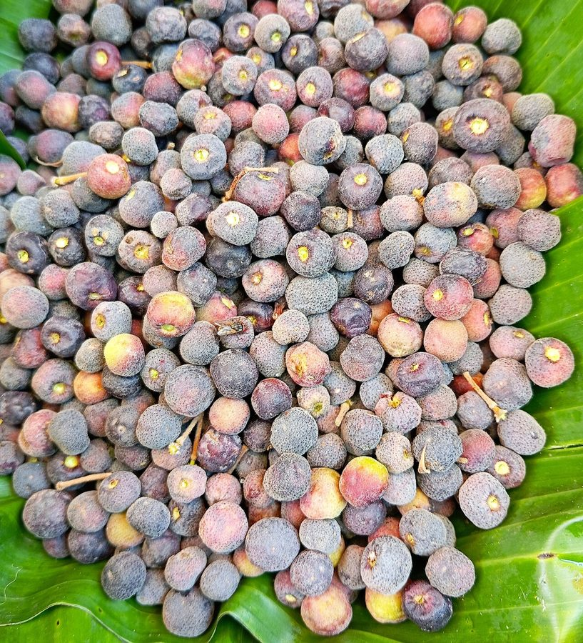

फालसाPhalsa
Grewia asiatica · Malvaceae · FLR-0315

- Scientific name वैज्ञानिक नाम
- Grewia asiatica L.
- Family कुल
- Malvaceae
- Hindi हिंदी
- फालसा
- Local names स्थानीय नाम
- phalsa, falsa, phalsa tree, dhaman
- Status here यहाँ की स्थिति
- native
- Movement आवागमन
- Resident, here all year
- Known from कहाँ दर्ज
- Others have published records from the wider Awadh–Purvanchal plain, none yet from Basti–Ayodhya अवध–पूर्वांचल से दूसरों के प्रकाशित अभिलेख, बस्ती–अयोध्या से अभी नहीं
- IUCN IUCN
- not evaluated
- Review समीक्षा
- not yet reviewed
When to look कब देखें
Present all year. साल भर मौजूद।
Uses and possibilities उपयोग और संभावनाएँ
“Traditional medicine” means a documented traditional use, not a claim that it works. Nothing on this page is medical advice.
Drawn from the documented uses in the profile below, where each is labelled traditional, current or a research lead. All uses →
Tell it apart from इनसे अलग पहचानें
फालसा / Phalsa
Grewia asiatica L. — Malvaceae
फालसा — उत्तर भारत के बगीचों और बाड़ों का एक परिचित छोटा पेड़ या बड़ा झाड़ीनुमा पौधा जिसके खट्टे-मीठे जामुनी फल भयंकर गर्मी में पकते हैं। इसकी पत्तियों के नीचे मखमली रोएं होते हैं और छोटे पीले फूल मधुमक्खियों से भरे रहते हैं। जेठ की तपती दोपहर में फालसे का ठंडा शरबत शरीर को शीतलता प्रदान करता है।
Quick Identification त्वरित पहचान
| Feature | Description |
|---|---|
| Habit | Small deciduous tree or large straggling shrub 4–8 m tall (Duthie 1903) |
| Bark | Greyish-white or rough brown, fibrous, peeling in long flexible ribbons |
| Leaves | Broadly ovate to suborbicular, 7–18 cm long, cordate, obliquely 5–6 nerved at base (Duthie 1903) |
| Indumentum | Softly stellate-tomentose beneath, especially on young leaves and shoots |
| Flowers | Small, yellow, 1.5–2.0 cm across, in axillary cymes of 3–5 flowers (Duthie 1903) |
| Fruit | Globose, 1–2 lobed drupe 8–12 mm across, ripening dark purplish-crimson with a sweet-sour pulp (Duthie 1903) |
Field tip: Look in old village orchards and field boundaries for coarse roundish leaves with heart-shaped bases and dense velvety undersides, bearing clusters of small purple-red berries in May.
हिंदी — कैसे पहचानें: गोल-अंडाकार खुरदरी पत्तियाँ जिनके नीचे मखमली रोएं होते हैं, छोटे पीले फूल, और जेठ-बैसाख में गुच्छों में पकने वाले खट्टे-मीठे बैंगनी-लाल छोटे बेर जैसे फल।
Morphology शारीरिक संरचना
Biometrics (Duthie 1903; Brandis 1906):
| Measurement | Range |
|---|---|
| Plant height | 4–8 m (Duthie 1903) |
| Stem diameter | 15–30 cm (Brandis 1906) |
| Leaf blade length | 7–18 cm (Duthie 1903) |
| Leaf blade width | 5–15 cm (Duthie 1903) |
| Petiole length | 1.0–2.0 cm (Duthie 1903) |
| Drupe diameter | 8–12 mm (Duthie 1903) |
Trunk and bark: Bole short, branching low to form a dense bushy crown. Bark greyish-brown, rough, fibrous; inner bark exudes mucilage when crushed.
Leaves: Alternate, stipulate, broadly ovate or suborbicular, acute or shortly acuminate, irregularly serrate or dentate. The leaf base is rounded or subcordate, prominently 5–6 nerved from the petiole insertion.
Flowers and fruit: Flowers bisexual, yellow, borne in axillary umbellate cymes. Petals five, oblong, shorter than the spreading sepals. The fruit is a subglobose pilose drupe containing 1–2 hard rugose stones surrounded by acidic edible pulp.
हिंदी: पेड़ का तना छोटा होता है और शाखाएं फैली रहती हैं। पत्तियाँ किनारे पर दांतेदार होती हैं। फल छोटे, गोल और गूदेदार होते हैं जिनमें कठोर बीज पाए जाते हैं।
Behaviour & Ecology व्यवहार एवं पारिस्थितिकी
Grewia asiatica is well adapted to extreme continental temperature fluctuations and monsoonal drought. It thrives in light well-drained alluvial loams as well as stony marginal soils, tolerating dry heatwaves exceeding forty degrees.
The small yellow flowers open sequentially over several weeks in mid-summer, secreting sweet nectar that draws dense assemblages of foraging honey bees. The berries ripen rapidly during peak pre-monsoon heat, offering critical hydration and carbohydrates to avian frugivores before rainy season greenery flushes.
हिंदी: यह भयंकर गर्मी और सूखा सहने वाला पौधा है। इसके पीले फूलों पर मधुमक्खियाँ मँडराती हैं और गर्मी में पकने वाले फल पक्षियों को भोजन व नमी प्रदान करते हैं।
Life Cycle / Phenology जीवन चक्र एवं ऋतुचक्र
| Period | Phenological Event |
|---|---|
| December–January | Leaves wither and drop; traditional orchards coppice or hard-prune the bushes |
| February–March | Vigorous annual shoots flush followed quickly by dense axillary flower buds |
| April–May | Flowers bloom and fruits swell rapidly; harvesting proceeds in May and early June |
| June–November | Vegetative growth continues through the monsoon, building carbohydrate reserves |
Cultivated bushes are traditionally cut back to near ground level each winter to stimulate vigorous fruiting wood for the following season.
हिंदी: सर्दियों में पत्तियाँ गिरती हैं और किसान डालियों की छँटाई करते हैं। बसंत में नई शाखाएं आती हैं और मई-जून में फल पककर तैयार हो जाते हैं।
Associated Species / Interactions संबद्ध प्रजातियाँ एवं पारस्परिक क्रियाएं
- Pollinators: Asian Honey Bee, Giant Honey Bee, and Dwarf Honey Bee visit the summer blooms.
- Frugivores: Common Myna, House Crow, and bulbuls forage actively in fruiting bushes.
- Orchard Associates: Planted along garden edges near Mango, Guava, and Indian Jujube.
हिंदी: इसके फूलों पर सभी प्रकार की देसी मधुमक्खियाँ रस इकट्ठा करती हैं और पके फलों को मैना व कौए खाते हैं।
Pests and Diseases कीट एवं रोग
- Fruit-boring caterpillars bore into developing green fruit clusters.
- Bark-eating caterpillars (Indarbela quadrinotata) bore into older unpruned stems.
- Cercospora leaf spot causes premature yellowing of foliage in late rainy periods.
हिंदी: फल छेदक इल्ली कच्चे फलों को नुकसान पहुँचाती है और पुरानी शाखाओं में तना छेदक कीट लग जाते हैं।
Agricultural / Human Relevance कृषि एवं मानवीय उपयोगिता
Traditional and Dietary Uses:
- Edible fruit. The ripe berries are eaten fresh with rock salt or pressed into a popular refreshing summer sherbet throughout northern India.
- Fibre and cordage. The mucilaginous inner bark yields strong bast fibre traditionally used for tying sugarcane bundles, rope-making, and crude basketry.
- Traditional medicine. Fruit juice and bark infusions have documented applications in classical Unani and Ayurvedic traditions for thirst alleviation, feverish heat, and digestive soothing (Kirtikar & Basu 1935). This is a record of traditional use, not medical advice.
- Fuel and garden stakes. Pruned annual stems provide excellent light fuel and staking material for vegetable climbers.
Today. Phalsa remains an important niche horticultural fruit in peri-urban markets across UP, valued for its low irrigation requirements and high culinary demand.
हिंदी: फालसे का शरबत गर्मियों का पारंपरिक शीतल पेय है। इसकी छाल के रेशों से गन्ने की बंधाई और रस्सियाँ बनाई जाती थीं, और छँटाई से निकली लकड़ियाँ जलाने के काम आती हैं।
Expected Locally स्थानीय संभावना एवं उपस्थिति
Not a field record. Written from published accounts for eastern Uttar Pradesh. No confirmed local sighting yet — if you have seen it, that is what the atlas needs.
अभी तक स्थानीय पुष्टि नहीं। यह विवरण प्रकाशित स्रोतों से है, किसी अवलोकन से नहीं।
Expected in eastern Uttar Pradesh across traditional village homesteads, orchard borders, peri-urban fruit gardens around Basti and Ayodhya, and semi-natural ravine thickets. GBIF holds published records from the wider Awadh–Purvanchal plain, none yet from Basti–Ayodhya. A first local record would be a dated photograph of the foliage, flowers, or fruit, submitted with locality details through the project's About page.
Distribution भौगोलिक वितरण
Global range: Native to South Asia from Pakistan and India to Nepal, Bangladesh, and Sri Lanka; introduced and cultivated in Southeast Asia and tropical drylands.
In India: Wild in dry deciduous scrub of the central and northern hills; cultivated widely across Punjab, Haryana, Uttar Pradesh, Rajasthan, and Maharashtra (Brandis 1906).
In Uttar Pradesh: Documented extensively in rural gardens, agricultural boundaries, and open woodlands across all agro-climatic zones (Duthie 1903).
In Basti district / eastern UP: Expected as a cultivated orchard companion and occasional naturalised hedge plant.
हिंदी: यह पूरे उत्तर और मध्य भारत में बाग़ों और बाड़ों में व्यापक रूप से उगाया जाता है।
Research Questions शोध प्रश्न
- How much traditional phalsa cultivation persists in village orchards around Basti today? / आज बस्ती के आसपास ग्रामीण बगीचों में फालसे की कितनी खेती बची हुई है?
- Which honey bee species is the most frequent visitor to phalsa blossoms in May? / मई में फालसे के फूलों पर सबसे अधिक कौन-सी मधुमक्खी आती है?
- What traditional pruning heights are practiced by elder fruit growers in Awadh? — Survey pruning methods in three fruit-growing villages.
- Does Grewia asiatica establish feral populations along railway embankments? — Check railway scrub lines for self-seeded bushes.
- What is the local market price dynamic for fresh phalsa baskets during peak summer? / जेठ के महीने में स्थानीय मंडियों में ताजे फालसे की मांग और उपलब्धता कैसी रहती है?
Similar Species समान प्रजातियाँ
| Species | How to tell apart | हिंदी |
|---|---|---|
| Indian Jujube (Ziziphus mauritiana) | Armed with sharp stipular spines; leaves 3-veined from base with white wool beneath | तने पर कांटे, पत्तियाँ सफेद रोएंदार |
| Soapnut (Sapindus mukorossi) | Large tree; leaves pinnate with multiple leaflets; fruit yellow-brown saponin drupe | बड़ा पेड़, संयुक्त पत्तियाँ, फल साबुन जैसा |
| Guava (Psidium guajava) | Leaves opposite, smooth, oblong; flowers solitary white; fruit large | पत्तियाँ आमने-सामने, फूल बड़े सफेद |
Field rule: Low-branching shrub or small tree with coarse suborbicular leaves having 5–6 basal nerves, small yellow cymes, and dark red-purple edible drupes ripening in summer indicates Grewia asiatica.
Taxonomy & Classification वर्गिकी एवं वर्गीकरण
Original description. Described by Carl Linnaeus in 1767 in Mantissa Plantarum, p. 122. The generic name Grewia honours the English plant anatomist Nehemiah Grew (1641–1712).
Subspecies. Monotypic — traditionally recognised as Grewia asiatica without formal infraspecific divisions in modern floras.
Family and order placement. Placed in the mallow family Malvaceae under order Malvales. Formerly assigned to Tiliaceae (the linden family), which has been merged into an expanded Malvaceae as subfamily Grewioideae.
Phylogenetic notes. Grewia is the largest genus in Grewioideae, containing over 280 Old World woody species adapted primarily to tropical seasonal savannas and dry forests.
IUCN status rationale. Not evaluated by the IUCN Red List; it remains common and ubiquitous in cultivation and semi-wild states across South Asia.
हिंदी: इसका नामकरण वनस्पति विज्ञानी नेहेमिया ग्रू के सम्मान में हुआ था और अब इसे मालवेसी कुल के अंतर्गत वर्गीकृत किया गया है।
Photo Gallery छायाचित्र दीर्घा
No photos yet — add field photos to media/species/phalsa/ and run node scripts/sync_photos.js.
Photos needed आवश्यक फोटो
- [ ] Flowering shrub in spring showing small yellow cymes (पीले फूलों से लदी शाखा)
- [ ] Cluster of ripening purple-red berries in May (मई में पके हुए बैंगनी-लाल फल)
- [ ] Mature pruned bush in a village orchard setting (गाँव के बाग़ में फालसे की झाड़ी)
References संदर्भ सूची
- Linnaeus, C. (1767). Mantissa Plantarum, p. 122. Holmiae: Laurentii Salvii.
- Duthie, J.F. (1903). Flora of the Upper Gangetic Plain and of the Adjacent Siwalik and Sub-Himalayan Tracts, vol. 1, pp. 113–114. Government Printing, Calcutta.
- Brandis, D. (1906). Indian Trees, p. 98. Archibald Constable & Co., London.
- Kirtikar, K.R. & Basu, B.D. (1935). Indian Medicinal Plants, 2nd ed., vol. 1, pp. 391–393. Lalit Mohan Basu, Allahabad.
- Hooker, J.D. (1874). The Flora of British India, vol. 1, pp. 386–387. L. Reeve & Co., London.
- GBIF Occurrence Data — Grewia asiatica L., India (2025).
Source file: species/flora/trees/phalsa.md